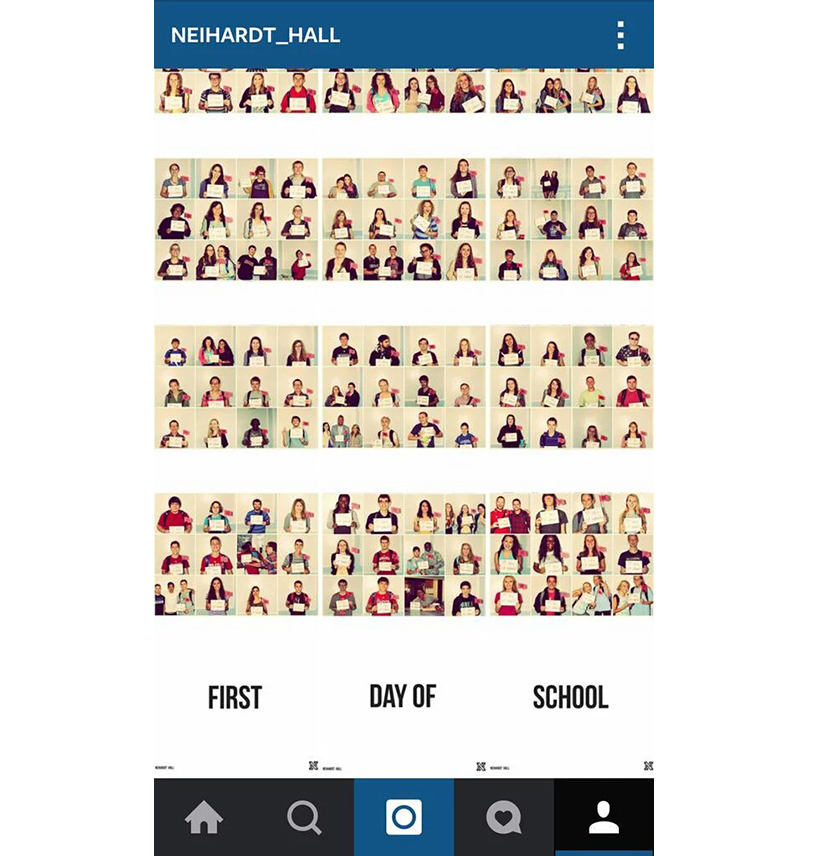
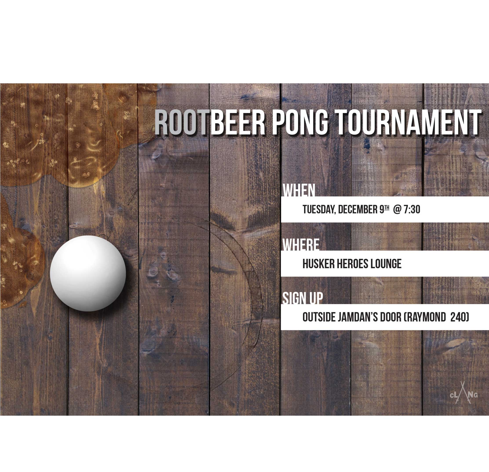
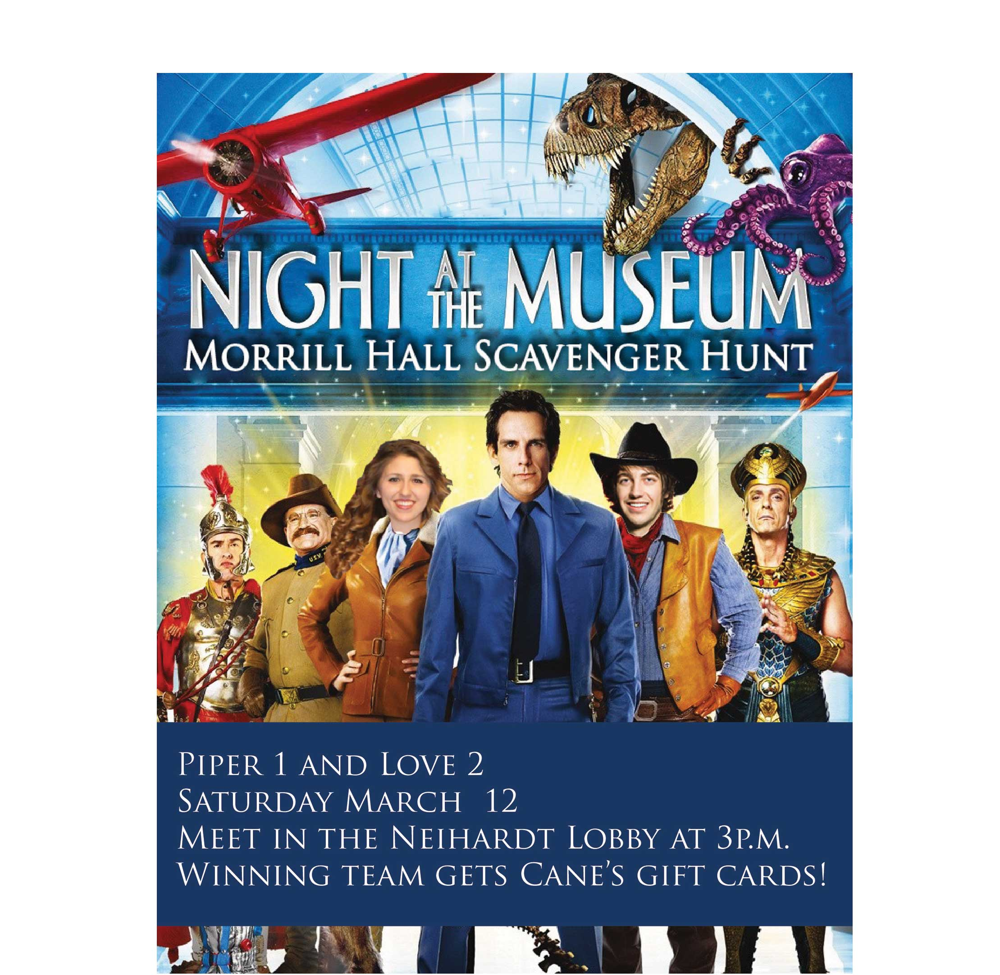

As a Resident Assistant, I got the opportunity to interact with a diverse group of students and help them develop a rewarding college experience. Working with University Housing and students has allowed me to plan and promote large-scale events as well as experience UNL and its opportunities to the fullest.
The Resident Assistant position is a student staff member who lives and works in a residence hall on campus. RA’s are responsible for building communities on their floors, providing resources to residents, developing programs for their floor, some administrative work, attending staff meetings, and being on duty/on call for their hall.
A Resident Assistant is the University's first line of defense. In my years as an RA, I played the part of relationship counselor, rule enforcer and friend. People in student affairs often say that being a resident assistant isn't a job, it's a lifestyle. That lifestyle did a lot to influence who I am today.
Resident Assistants at UNL receive intensive training on the following:
It was as an RA that I discovered my passion for working with students. I had an amazing experience my freshman year at UNL and as an RA I worked to give other students a similar experience. Neihardt Hall was my home for 4 years and I worked to make it a welcoming place for everyone who lived there.
Every staff of RAs has one Senior Resident Assistant. The SRA keeps their fellow RAs in line, tracking and evaluating their progress throughout the year. SRAs often play a key role in training and the administrative process.
As the Neihardt SRA I led a team of 13 resident assistants. The experience taught me a lot about effectively managing a team of diverse personalities.